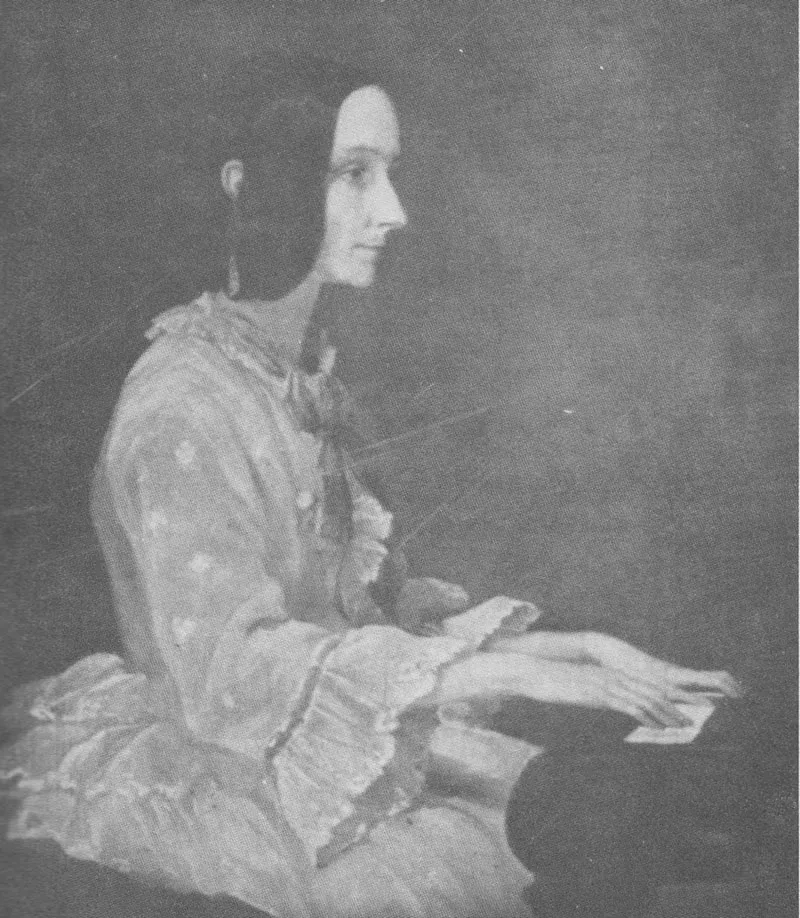
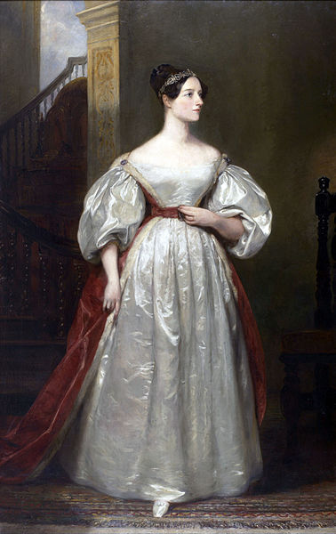
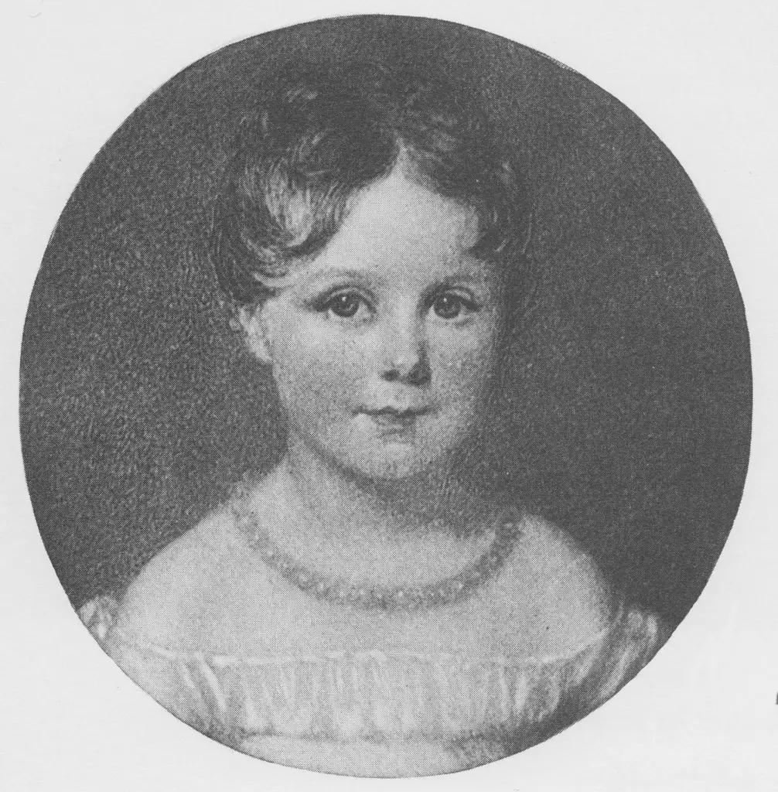
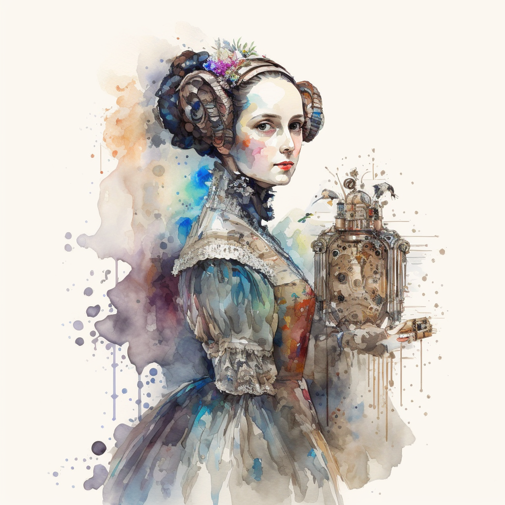
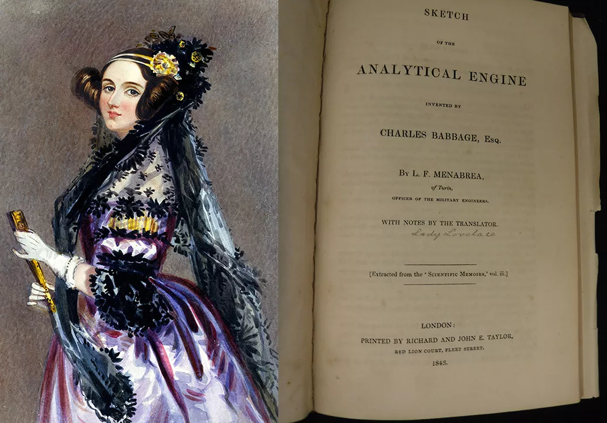

Quem era Ada Lovelace?
Ada Lovelace, também conhecida como Augusta Ada Byron King, Condessa de Lovelace, foi uma figura notável do século XIX. Nascida em 10 de dezembro de 1815, em Londres, Inglaterra, ela deixou um legado duradouro na história da computação e da ciência.
Ada era filha do famoso poeta Lord Byron e da matemática Anne Isabella Milbanke. Sua educação foi influenciada por sua mãe, que a incentivou a estudar matemática e lógica. Aos 17 anos, Ada conheceu Charles Babbage, um matemático e inventor, que estava trabalhando em projetos revolucionários de máquinas de cálculo.
O que torna Ada Lovelace tão especial é sua visão pioneira sobre o potencial das máquinas. Ela não apenas compreendeu os aspectos técnicos da Máquina Analítica de Babbage, mas também previu que essas máquinas poderiam ir além dos cálculos matemáticos. Em suas anotações sobre o artigo de Luigi Federico Menabrea, Ada descreveu como a máquina poderia gerar música, gráficos e arte. Ela criou o primeiro algoritmo destinado a ser executado por uma máquina, tornando-se a primeira programadora da história.
Conheça mais sobre a Condessa Lovelace
Sua carreira
Augusta Ada Byron King, Condessa de Lovelace, também conhecida como Ada Lovelace, foi uma matemática e escritora inglesa. Ela é reconhecida principalmente por ter escrito o primeiro algoritmo a ser processado por uma máquina, especificamente a máquina analítica de Charles Babbage. Durante sua colaboração com Babbage, Ada desenvolveu algoritmos que permitiriam à máquina calcular valores de funções matemáticas e publicou uma coleção de notas sobre a máquina analítica. Por esse trabalho, ela é considerada a primeira programadora da história.
Sua principal obra se encontra em: Sketch of the Analytical Engine invented by Charles Babbage ... with notes by the translator. Extracted from the 'Scientific Memoirs,' etc. [The translator's notes signed: A.L.L. ie. Augusta Ada King, Countess Lovelace.]
Suas conquistas
| Conquista | Descrição |
|---|---|
| Programa para a Máquina Analítica (1843) | Em 1843, Ada Lovelace escreveu o primeiro algoritmo destinado a ser processado por uma máquina. Ela colaborou com Charles Babbage, um matemático e inventor britânico, na criação da máquina analítica. Suas notas sobre o artigo de Luigi Federico Menabrea incluíam um algoritmo para calcular os números de Bernoulli usando a máquina analítica. Essa conquista a tornou a primeira programadora da história. |
| Visão Visionária | Ada Lovelace reconheceu que os computadores tinham um potencial muito maior do que apenas cálculos matemáticos. Ela previu que as máquinas poderiam ser usadas para criar música, arte e muito mais, muito antes de qualquer computador real ser construído. |
| Colaboração com Charles Babbage | Lovelace colaborou com Charles Babbage, o inventor da Máquina Analítica. Ela não apenas traduziu e anotou um artigo escrito pelo matemático italiano Luigi Federico Menabrea sobre a máquina, mas também acrescentou suas próprias ideias e insights, incluindo o primeiro algoritmo de computador. |
| Legado Duradouro | Ada Lovelace é lembrada como uma pioneira na história da computação. O Dia de Ada Lovelace, celebrado na segunda terça-feira de outubro, homenageia as contribuições das mulheres para a ciência e a tecnologia. |
| Fontes: Descritas no fim da página. | |
Linha do Tempo completa
| Data | Acontecimento |
|---|---|
| 10/12/1815 | Nascimento, Londres(Ingraterra). |
| 16/01/1816 | Mudou-se com a mãe para a casa de seus avôs, em Kirkby Mallory. |
| 21/04/1816 | Separação de seus pais. |
| 1824 | Morte de seu pai. |
| 1827 | Ganhou o apelido de "Senhora Fada", devido ao seu desejo de voar. |
| 1828 | Escreveu o livro "Flyology", ilustrando todas as suas ideias e estudos sobre voar. |
| 06/1829 | Ficou paralisada após contrair sarampo, ficando em repouso por quase um ano. |
| 1831 | Andava usando muletas devido a sequelas do sarampo. |
| 1832 | Foi apresentada à Corte e ficou conhecida por sua mente brilhante. |
| 1833 | Teve um caso com seu tutor e tentou fugir com ele. |
| 1833 | Foi apresentada para Charles Babbage por Mary Somerville. |
| 1835 | Casou-se com William Lord King. |
| 1835 | Primeira vez em que foi altorizada a ver retratos de seu pai. |
| 1836 | Nascimento de seu primeiro filho, Byron. |
| 1837 | Nascimento de sua segunda filha, Anne Isabella. |
| 1838 | Tornou-se Lady Lovelace, pois seu marido foi nomeado Conde de Lovelace e Visconde de Ockham. |
| 1839 | Nascimento de seu terceiro filho, Ralph Gordon |
| 1840 | Envolveu-se em diversos escândalos, como relações extramatrimoniais e jogos de azar. |
| 1842-1843 | Traduziu um artigo do engenheiro militar italiano Luigi Federico Menabrea sobre a Máquina Analítica. |
| 1844 | Inicio de seu caso com John Crosse, filho do cientista Andrew Crosse. |
| 27/11/1852 | Morrou devido a um cancêr de útero. |
| 1953 | Suas notas sobre a máquina analítica de Babbage foram republicadas, sendo consideradas a descrição de um computador e de um software. |
| 1980 | Aprovação da documentação da linguagem Ada. |
| 1981 | Criação do Prêmio Ada Lovelace pela Associação de Mulheres na Computação. |
| 1998 | A Associação Britânica de Computação criou a Medalha Lovelace. |
| 13/10/2009 | Primeira comemoração do dia da Ada Lovelace. |
| 27/07/2018 | 9 de outubro de 2018 se tornou o Dia Nacional Ada Lovelace nos Estados Unidos. |
| Fonte: wikipedia | |
Legado
- A linguagem de programação Ada foi criada em homenagem a Ada Lovelace pelo Departamento de Defesa dos Estados Unidos. A documentação da linguagem foi aprovada em 10 de dezembro de 1980.
- Em 1981, a Associação de Mulheres na Computação criou o Prêmio Ada Lovelace.
- Em 1998, a Associação Britânica de Computação criou a Medalha Lovelace.
- A Associação Britânica de Computação patrocina o Lovelace Colloquium, uma conferência anual para mulheres estudantes de graduação.
- Desde 2009, toda segunda terça-feira de outubro é comemorado o Dia da Ada Lovelace. O objetivo é destacar mulheres na ciência, tecnologia, engenharia e matemática, além de criar novos modelos para meninas e mulheres. Eventos incluem a Maratona de Edição da Wikipédia para aumentar a representação das mulheres na plataforma.
- A Ada Initiative é uma organização sem fins lucrativos dedicada a aumentar o envolvimento das mulheres no movimento pela cultura livre e em projetos open source.
- A Ada Developers Academy em Seattle treina mulheres cis, trans e não-binárias para se tornarem engenheiras de software.
- Em 2009, a artista plástica Sydney Padua criou a história em quadrinhos “The Thrilling Adventures of Lovelace and Babbage”. O quadrinho conta a história de Charles Babbage e Ada Lovelace de forma descontraída. Em 2015, o quadrinho foi transformado em um livro com o mesmo nome.
- Em 27 de julho de 2018, o senador americano Ron Wyden propôs a designação de 9 de outubro de 2018 como Dia Nacional Ada Lovelace.
O primeiro algoritmo de computador da história
Com apenas seis cópias disponíveis no mundo, o livro que contém as notas teóricas de Lovelace foi vendido em um leilão no Reino Unido por 95 mil libras (o equivalente a R$ 463 mil).

Para mais informações pode-se concultar o site: Revista Galileu